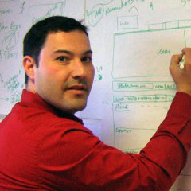

Search is not just a box and ten blue links. Search is a journey: an exploration where what we encounter along the way changes what we seek. But in order to guide people along this journey, we must understand both the art and science of search.
Peter Morville, author of Search Patterns: Design for Discovery
“Designing the Search Experience is required reading for all information architects and user experience designers.”
Marti Hearst, author of Search User Interfaces
“Tony and Tyler's book combines the best of both worlds: they provide useful advice based both on academic research and real world experience.”
Daniel Tunkelang, Principal Data Scientist at LinkedIn
“Tony Russell-Rose and Tyler Tate are industry veterans when it comes to search user experience.”
Ricardo Baeza-Yates, author of Modern Information Retrieval
“This book is not only useful for people interested in search, but for all user experience and interface designers.”
The Book
What You'll Learn
Designing the Search Experience weaves together the theories of information seeking with the practice of user interface design. This definitive guide will enable you to:
Understand how people search and how the concepts of information seeking, information foraging, and sensemaking underpin the search process.
Apply the principles of user-centered design to the search box, search results, faceted navigation, mobile interfaces, social search, and much more.
Design the cross-channel search experiences of tomorrow that span desktop, tablet, mobile, and other devices.
“In Designing the Search Experience, Tony Russell-Rose and Tyler Tate provide a unique synthesis that integrates scholarly research and best practice into a compelling story about how we can make search better.” — Peter Morville, author of Search Patterns: Design for Discovery
is Professor of Human-Computer Interaction at University College London.
Karen Church
is a Researcher within the User and Media Intelligence group in Telefonica Research, Barcelona, Spain.
Rory Hamilton
is a freelance service design consultant, and educator in service and interaction design.
James Kalbach
is a Principal UX Strategist with USEEDS°, a leading design and innovation agency in Germany.
Joe Lamantia
blends insight and design to improve peoples’ experiences.

Greg Nudelman
has been designing experiences that work for Fortune 500 companies for over 12 years.
Lou Rosenfeld
is an independent information architecture consultant for Fortune 500 corporations and other large organizations.
Ian Ruthven
is a Professor of Information Seeking and Retrieval at the University of Strathclyde.
Daniel Tunkelang
leads a data science team at LinkedIn which analyzes data to produce products and insights for 150M+ members.
Martin White
is Managing Director of Intranet Focus Ltd. and Visiting Professor, iSchool, University of Sheffield.
Authors
Tony Russell-Rose
Tony Russell-Rose is director of UXLabs, a research and design consultancy specialising in complex search and information access applications. Before founding UXLabs he was Manager of User Experience at Endeca and editor of the Endeca UI Design Pattern Library, an online resource dedicated to best practice in the design of search and discovery experiences. Prior to this he was technical lead at Reuters, specialising in advanced user interfaces for information access and search. And before Reuters he was R&D group manager at Canon Research Centre Europe, where he led a team developing next generation information access products and services. Earlier professional experience includes a Royal Academy of Engineering fellowship at HP Labs working on speech UIs for mobile devices, and a Short-term Research Fellowship at BT Labs working on intelligent agents for information retrieval.
His academic qualifications include a PhD in human-computer interaction, an MSc in cognitive psychology and a first degree in engineering, majoring in human factors. He also holds the position of Honorary Visiting Fellow at the Centre for Interactive Systems Research, City University, London.
He is currently vice-chair of the BCS Information Retrieval group and chair of the IEHF Human-Computer Interaction group. Tony is @tonygrr on Twitter, blogs at isquared.wordpress.com, and can be reached at tgr[AT]uxabs.co.uk.
Tyler Tate
Tyler Tate is the cofounder of Twigkit, a London-based software company that provides tools for rapidly building data-driven applications. At Twigkit he has helped numerous government, Fortune 500, and other large organizations achieve superb search experiences. Prior to specializing in search, Tyler led design at Nutshell CRM, designed an enterprise content management system, ran a small design studio, and taught a university course on web design.
Tyler has written articles for publications such as A List Apart, Boxes & Arrows, UX Magazine, Johnny Holland, UX Matters, and Smashing Magazine. He also organizes the Enterprise Search London meetup, and has created popular CSS frameworks such as the Semantic Grid System. He is @tylertate on Twitter, blogs at tylertate.com, and can be reached at tyler[at]tylertate.com.
Tyler is an American currently living in Cambridgeshire, England with his wife, Ruth, and their two boys, Galileo and Atticus.